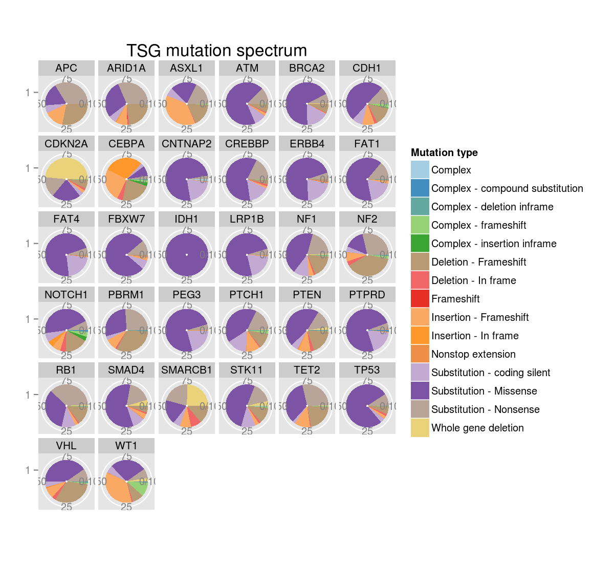
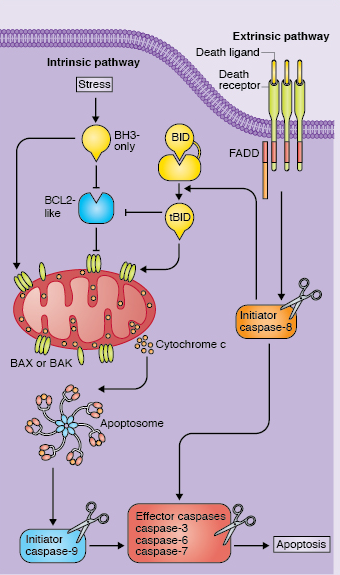
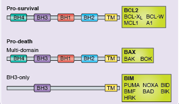

p53 ja apoptoos
Onkobioloogia
Taavi Päll
vanemteadur, VTAK
Recap
Rakutsükkel
- Rakutsükkel on järjestikuste sündmuste jada mille käigus rakk duplitseerib kõik oma koostisosad ja jaguneb kaheks tütarrakuks.
- Raku rakutsüklisse sisenemist reguleerivad raku väliskeskkonna signaalid.
- Mittejagunev rakk on vaikeolekus (quiescence) ehk G0 faasis.
Rakku jagunema/mittejagunema mõjutavad signaalid
Rakk on tundlik väliskeskonna signalisatsioonile varases ja keskmises G1 faasis.
- \(\uparrow\) türosiin kinaas retseptorid (mitogeenid).
- \(\uparrow\) G-valk retseptorid (GPCR).
- \(\downarrow\) TGF-\(\beta\) retseptorid, TGF-\(\beta\) on üks prominentsemaid anti-mitogeene.
- \(\downarrow\) toitainestaatus.
Tsükliinid ja CDK inhibiitorid
- Kasvufaktorid stimuleerivad kiire tsükliin D taseme tõusu rakus ja CDK4/6 aktivatsiooni.
- Anti-mitogeenne TGF-\(\beta\) signalisatsioon aktiveerib p15INK4B tsükliini kinaasi inhibiitori.
RB kontrollib restriktsioonipunkti
- Peale R punkti on rakutsükli regulatsioon automaatne ja ei allu enam mitogeensele-anti-mitogeensele kontrollile.
- R punkti läbimist reguleerib
- RB hüpofosforüleerimine tsükliin D-CDK4/6 poolt ja
- hüpofosfo-RB hüperfosforüleerimine tsükliin E-CDK2 poolt.
Kasvajates on rakutsükkel dereguleeritud
TP53
p53 avastamine
- 1979. aastal esitasid kuus sõltumatut uurimisrühma andmed, et nad on avastanud 53 kDa valgu inimese ja hiirte rakkudest (DeLeo et al. 1979, Kress et al. 1979, Lane & Crawford 1979, Linzer & Levine 1979, Melero et al. 1979, Smith et al. 1979).
- Viiel juhul avastati see valk sellepärast, et see immuunosadestus koos SV40 viirusvalguga suur T-antigeen (large T-antigen).
- Sama valk avastati ka pooljuhuslikult kui keemiliselt transformeeritud sarkoomirakkude vastu genereeritud antiseerum tundis ära 53 kDa valgu transformeerunud rakkudest, kuid mitte normaalsetes rakkudes.
Onkoviiruste märklauaks on pRb, p53 ja apoptoos
| Viirus | Viirusvalk mille märklauaks on Rb | Viirusvalk mille märklauaks on p53 | Viirusvalk mille märklauaks on apoptoos |
|---|---|---|---|
| SV40 | suur T (large T antigen) | suur T | |
| adenoviirus | E1A | E1B55K | E1B19K |
| HPV | E7 | E6 | |
| polüoomiviirus | suur T | suur T? | keskmine T (middle T) |
| herpesviirus saimiri | V tsükliin (D tsükliini homoloog) | v-Bcl-2 | |
| HHV-8 (KSHV) | K tsükliin (D tsükliini homoloog) | LANA-2 | v-Bcl-2, v-FLIP |
| HCMV | IE72 | IE86 | vICA, pUL37 |
| HTLV-I | Tax | ||
| Epstein-Barr | EBNA-1 | LMP-1 |
p53 peeti algselt onkogeeniks
- 1980.ndate alguses oli tuumorsupressorgeenide kontseptsioon veel väga teoreetiline ja viirustest isoleeritud rakulisi onkogeene peeti võtmeks vähi olemuse mõistmisel.
- p53 seostus SV40 viiruse peamise onkogeeni - suur T-antigeeniga, viidates et ta kuulub miskitmoodi suur Tag "signaaliraja"" koosseisu.
- p53 oli paljudes kasvajates üle-ekspresseeritud.
- "Normaalse" p53 viimine normaalsetesse rakkudesse oli võimeline põhjustama rakkude transformeerumise.

p53 on klassikaline "two-hit" tuumorsupressor
- p53 ilmus jäädavalt radarile kui käärsoolevähist otsiti oletatavat tuumorsupressorgeeni kromosoomi 17p lookusest (Baker et al. 1989).
- Enamuses käärsoolevähkides olid p53 geenis aminohappe asendusi põhjustavad missens mutatsioonid (C \(\rightarrow\) T).
- Kõigil juhtudel oli p53 geeni mõlemad koopiad muteerunud: üks koopia sisaldas mutatsioone ja teine koopia oli täielikult kaduma läinud (LOH).
- p53 oli muteerunud väga erinevates vähkides (Nigro et al. 1989)
p53 mutatsioonisagedused kasvajates
## Warning in file(file, "rt"): cannot open file 'PrevalenceIARC TP53
## Database, R17.txt': No such file or directory
## Error in file(file, "rt"): cannot open the connection
## Error in eval(expr, envir, enclos): object 'prev' not found
## Error in sum$Topography: object of type 'builtin' is not subsettable
## Error: ggplot2 doesn't know how to deal with data of class function
TSG mutatsioonid
- TSG sisaldavad laias laastus kahte tüüpi mutatsioone,
- ühed viivad valgu osalise või täieliku trunkeerumiseni nt. APC, CDKN2A,
- teised põhjustavad aminohappe asendusi (missens mutatsioonid).
- p53 kuulub selliste TSG hulka milles on kõige sagedasemad aminohappe asendusteni viivad mutatsioonid.
- Võib oletada, et selline missens mutatsioone sisaldav tuumorsupressor valk annab vähirakkudele mingi selektsioonilise eelise.

p53 mutatsioonid asuvad peamiselt DNA sidumise domäänis

p53 mutandid on dominant negatiivsed
- p53 toimib homotetrameerina.
- Kui rakus on näiteks üks p53 alleel muteerunud, siis see mutantne p53 moodustab komplekse wild-type p53 ja inaktiveerib need.
- Tetrameeride puhul on kombinatoorikast lähtudes ainult 1/16 p53 kompleksist täielikult wild-type ehk aktiivne.
- Kui rakus oleks mutantse p53 alleeli ekspressioon täielikult inaktiveeritud, siis säiliks ikkagi p53 wild-type funktsioon.
- Kasvajates p53 muteerunud siiski (kuni 50%) ja läbinud LOH sündmuse.

p53 reguleeritakse valgu stabiilsuse läbi
- Normaalsetes, mitte stressis olevates rakkudes on p53 väga ebastabiilne poolestusajaga 5-30 min.
- Selline kiire tsükkel võimaldab rakul kiiresti vastata füsioloogilistele signaalidele.
- Ksenotoksilised agendid indutseerivad p53 minutite jooksul.
- Selline induktsioon ei ole tingitud p53 mRNA taseme tõusust.
- p53 valgu tase tõuseb rakkudes täielikult tingituna post-translatsioonilistest modifikatsioonidest mis tõstavad selle normaalselt labiilse valgu stabiilsust.

p53 indutseerib stress
| Stiimuli tüüp | stiimul |
|---|---|
| stress | hüpoksia, nukleotiidide puudus, UV kiirgus, ioniseeriv kiirgus, RNA- või DNA sünteesi blokk, madal pH, NO, DNA kahjustused, kemoteraapia |
| onkogeenne signalisatsioon | MYC, E2F1 üle-ekspressioon, DNA demetülatsioon |
- p53 taseme tõus rakkudes viib pöörduva või pöördumatu (senescence) rakutsükli arrestini.
- p53 aktiveerib DNA reparatsiooni raja.
- p53 blokeerib angiogeneesi (TSP-1\(\uparrow\)).
- p53 indutseerib apoptoosi
p53 indutseerib p21 transkriptsiooni
- p21 vahendab p53 rakutsüklit inhibeerivat efekti, samas p21 inhibeerib p53-sõltuvat apoptoosi.

DNA kahjustused ja onkogeenid stabiliseerivad p53
Peamised p53 stabilisatsiooni rajad
- dsDNA kahjustus, ioniseeriv kiirgus, telomeeride lühenemine aktiveerib ATM \(\to\) Chk2 raja.
- ssDNA, UV kiirgus, replikatsioonistress, kemoterapeutikumid akiveerivad ATR (ATM–Rad3-related protein) \(\to\) Chk1 raja.
- p53 fosforüleeritakse amino terminusest Ser-15, Ser-37 jt.
- Amino-terminaalne fosforüleerimine blokeerib MDM2 sidumise p53.
- Myc või E2F1 aktivatsioon viib rakus p19ARF valgu taseme ülesse, mis blokeerib MDM2 ja võib viia rakud apoptoosi.

MDM2

- MDM2 avastati kui double-minute kromosoomid hiire sarkoomirakkudes (mouse double minutes).
- Mdm2 on E3 ubikvitiin ligaas mis tunneb ära p53 amino-terminaalse trans-aktivatsiooni domääni.
- Mdm2 on p53 märklaudgeen.
- MDM2 ekspressiooni indutseerib ka mitogeenne signalisatsioon läbi MAPK raja (AP-1 TF).
- Samuti stabiliseerib MDM2 Akt/PKB, mille poolt fosfoforüleerimine blokeerib MDM2 auto-ubikvitineerimise.
ARF
- p19ARF (hiir) või p14ARF (inimene) valku kodeerib kompaktne geneetiline lookus kus asub kokku kolm tuumorsupressorgeeni: p16INK4A, p15INK4B ja p19/p14ARF .
- ARF geeni promootor asub 13 kB ülevalpool p16INK4A promootorist. ARF - alternative reading frame.
- ARF seob MDM2 ja inhibeerib selle korjates ta tuumakesse.
- ARF ekspressiooni aktiveerivad c-MYC, RAS ja ka adenoviiruse E1A.

Rb funktsiooni kadumine käivitab ka apoptoosi programmi
- E2F liigse aktiivsuse puhuks on evolutsiooniliselt kujunenud mehhanism, mis elimineerib normaalse pRb kontrolli kaotanud rakud.
- Kõrge E2F1 aktiveerib mitmete apoptootiliste geenide transkriptsiooni: kaspaasid (3,7,8,9), pro-apoptootilised Bcl2 valgud (Bim, Noxa, PUMA), Apaf-1 ja p73 (p53 homoloog).
- E2F1/2 reguleerib ka p53-sõltuvat apoptoosi indutseerides p14ARF .
RB-sõltuv apoptoosi rada: pRb \(\dashv\) E2F \(\to\) ARF \(\dashv\) MDM2 \(\dashv\) p53 \(\to\) apoptoos
Valik p53 märklaud geene. Kokku on ~120 geeni leitud.
| Geeni funktsionaalne klass | Geen | Funktsioon |
|---|---|---|
| p53 antagonist | MDM2 | p53 ubikvitiinligaas |
| rakutsükli inhibiitorid | p21CIP1 | CDK inhibiitor |
| Siah-1 | ubikvitiinligaas, \(\beta\)-kateniini lagundamine | |
| 14-3-3\(\sigma\) | tsükliin B-CDK1 inhibiitor | |
| Reprimo | G2 arrest | |
| DNA reparatsioon | p53R2 | DNA biosüntees |
| XPE/DDB2, XPG, XPC | NER (nucleotide excision repair) | |
| GADD45 | NER (nucleotide excision repair) | |
| DNA pol. \(\kappa\) | DNA polümeraas | |
| apoptoos | BAX | mt poorivalk |
| PUMA, NOXA | BH3 mt poorivalk | |
| APAF1 | kaspaas-9 aktivaator | |
| NF-$\kappa$B | TF | |
| Fas/APO1 | surmaretseptor | |
| anti-angiogenees | TSP-1 (trombospondiin) | ECM valk |
p53 anti-neoplastiline toime on peamiselt tingitud apoptoosi induktsioonist
- p53 aktiveerib näiteks CD95 (Fas/APO1) ja mitmete Bcl-2 perekonna pro-apoptootiliste geenide transkriptsiooni.
- p53-indutseeritud apoptoos kulgeb siiski peamiselt läbi mitokondriaalse tsütokroom c vahendatud kaspaaside aktivatsiooni.
INK4a/ARF mutations accelerate lymphomagenesis and promote chemoresistance by disabling p53
E$\mu$–myc transgeensed hiired ekspresseerivad konstitutiivselt c-Myc-i B-rakkudes ja neil areneb välja B-raku lümfoom ja leukeemia. p53 või/ja ARF knockout selles mudelis kiirendab oluliselt lümfoomi teket (joonisel: c,d,e).


Apoptoos
Apoptoosi mehhanismid: sisemine ja ligand vahendatud
- Vastusena apoptootilistele stiimulitele aktiveeritakse kõigepealt initsiaator kaspaasid(kaspaas-2,-8,-9,-10) mis aktiveerivad omakorda effektor kaspaasid (kaspaas-3 või -7).
- Kaspaaside kaskaadi aktiveerimine käivitab raku valkude proteolüütilise lagundamise ja rakusurma.
- Selliselt surnud rakud fragmenteeruvad vesiikuliteks ja fagotsüteeritakse teiste rakkude poolt.
- Rakkude sisemine (intrinsic) mehhanism käib üle tsütokroom c vabanemise mitokondrist ja indutseeritud mehhanism käib läbi surmaretseptorite või TNF ja TRAIL-i raja.

Kaks apoptoosi rada

{kind=link}
B cell lymphoma 2 (BCL-2) perekonna valgud
- Pro- ja anti-apoptootiliste BCL-2 perekonna valkude tasakaal määrab mitokondriaalse raja aktiveerumise.
- BCL-2 valke klassifitseeritakse valgus olevate BH domäänide (BCL-2 homology) järgi.
- Pro-apoptootilised BCL-2 valkude hulka kuuluvad BH3-only valgud BIM (Bcl2-interacting mediator of cell death), BID (BH3-interacting domain death agonist) ja BAD (Bcl2-associated agonist of cell death) ning multi BH domääne sisaldavad valgud BAX (Bcl2-associated protein X), BAK (Bcl2 antagonist/killer) ja BOK.
- Anti-apoptootilised (prosurvival) BCL-2, BCL-XL (B cell lymphoma extra large) ja MCL-1 (induced myeloid leukemia cell differentiation protein), mis sisaldavad kõiki BH1-BH4 domääne.
- Anti-apoptootilised valgud toimivad nii, et nad sekvesteerivad pro-apoptootilised valgud.

Apoptoosis osalevad valgud on vähis dereguleeritud

- Vähis on apoptoosis osalevad geenid ja geeniproduktid ülesse või alla reguleeritud kas
- transkriptsiooni tasemel (sinised kolmnurgad),
- translatsiooni tasemel (punased) või
- posttranslatsiooniliselt (rohelised).
| BH3 geen | KO hiire fenotüüp | inimese vähk | BH3 geeni muutused |
|---|---|---|---|
| BIM | lümfoid ja müeloid hüperplaasia | mantelraku lümfoom, Burkitti lümfoom | homosügootne deletsioon, promootori hüpermetülatsioon, promootori mutatsioon |
| PUMA | \(\gamma\)-kiirguse resistentsus | pea-kaela lamerakuline kartsinoom, mitte-väikserakuline kopsuvähk | LOH |
| glioom, neuroblastoom, B-raku lümfoom | vaigistamise kadu | ||
| melanoom | vähenenud ekspressioon | ||
| ninaõõne- ja mao kartsinoom | \(\uparrow\) miR-34a ekspressioon | ||
| NOXA | normaalne | ei ole muutunud | |
| BMF | progressiivne B-lümfoidne hüperplaasia | Burkitti lümfoom | \(\downarrow\) ekspressioon |
| B-raku krooniline lümfotsüütne leukeemia | \(\uparrow\) ekspressioon | ||
| rinna-, kopsu- ja käärsoole kasvaja | lookuse 14q14.15 deletsioon | ||
| BAD | ~norm; vähesel määral esineb difuusset suure B-rakulist lümfoomi | käärsoole adenokartsinoom | loss-of-function mutatsioon (BH3 domään) |
BH3 valkude regulatsioon

Onkogeensed kinaasid reguleerivad MCL-1, BIM ja PUMA

Erinevad stiimulid indutseerivad erineva BH3-only repertuaari
| stiimul | BH3 valk |
|---|---|
| tsütokiinide nälg | BIM, PUMA, BAD, HRK |
| proteasoomi inhibiitorid (Bortezomib) | BIM, NOXA, BID, BIK |
| DNA kahjustused (kemoteraapia, \(\gamma\)-kiirgus) | BIM, PUMA, NOXA |
| glukokortikoidid (Dexamethasone) | BIM, PUMA, BMF |
| türosiin kinaasi inhibiitorid (Gefitinib, Imatinib) | BIM, BMF, BAD |
| HDAC inhibiitorid (Vorinostat) | BIM, BID, BMF |
| ionomütsiin | BIM |
| Paclitaxel | BIM |
| forbool estrid (PMA) | PUMA |
Apaf-1 vaigistamine melanoomis annab sellele kemoresistentsuse
- Melanoomid kannavad sagedasti wild-type p53 geeni.
- Apoptoos on neis supresseeritud läbi Apaf-1 valgu ekspressiooni kadumise.
- Apaf-1 vaigistamine toimub läbi epigeneetilise mehhanismi ja LOH-i.
- DNA metülatsiooni või histooni deatsetüleerimist supresseerivad agendid on võimelised taastama Apaf-1 ekspressiooni ja melanoomirakkude tundlikkuse kemoterapeutilistele ühenditele.

Vähirakud kasutavad erinevaid mehhanisme, et vaigistada apoptoosi masinavärk ja kontrollimatult paljuneda. Selleks kasutavad nad Akt/PKB raja aktivatsiooni, anti-apoptootiliste Bcl2 valkude üle-ekspressiooni, p53 inaktivatsiooni, pro-apoptootiliste geenide promootorite hüpermetüleerimist, tsütokroom c vabanemise pärssimist, kaspaaside inhibitsiooni.